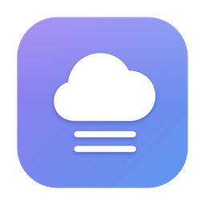
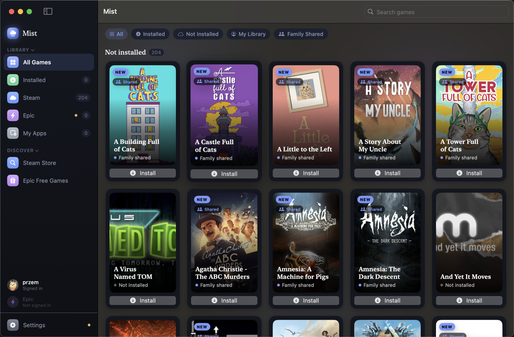

Play Windows Steam & Epic games on macOS.
One login covers your library, downloads, achievements, and Cloud saves —
no Steam client, nothing to install by hand.

A single Steam QR scan (or username/password) covers your whole library, game downloads, achievements, and Cloud saves. There's no second sign-in, ever.
Browse them in-app with global rarity, and unlock them in-game — synced to your actual Steam profile. Mist only syncs what you genuinely earn.
See your Cloud quota and restore any synced save straight into the right spot in your Wine prefix, one click — verified against a real Steam client's own traffic.
Mist talks to Steam's APIs directly — no flaky Chromium-based Steam UI under Wine, no black screens, no Accessibility permissions to grant.
Helper tools ship inside the app; the Wine engine (~200 MB) downloads itself on first launch. Nothing to install with Homebrew.
Runs games through the CrossOver Wine engine, using Apple's Game Porting Toolkit (D3DMetal) when available, with DXVK/MoltenVK as a fallback.
brew install --cask 98przem/tap/mist
Or download Mist.dmg from the latest release and drag it to Applications.
Mist isn't notarized — right-click the app → Open on first launch to get past Gatekeeper.